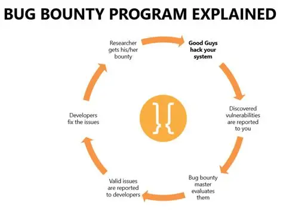
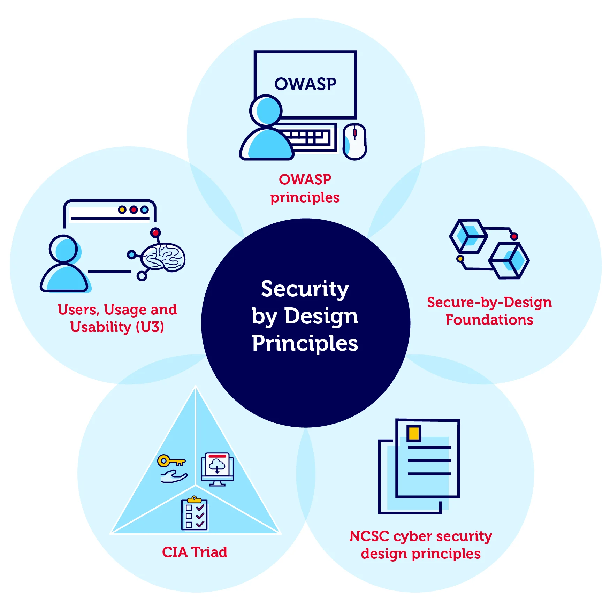

Welcome to Module four of the Cybersecurity Awareness Training course.
In this module you'll learn how to know security implications of proper hardware, software and use data asset management.
You will learn how to identify potential security risks, implement appropriate security controls, and understand the importance of secure coding practices in software development.
Learning Objective
When you complete this module, you will be able to explain the security implications of proper hardware, software, and data asset management, as well as identify and implement appropriate security controls in software development.
Cybersecurity Awareness Training
Module 4 • How to Develop/Code Secure Platforms
Page 2 of 9
Explain the security implications of proper hardware, software, and data asset management. (part 1)
To obtain proper hardware we use the acquisition/procurement process to ensure that the hardware is secure and meets the organization's security requirements. This includes evaluating the security features of the hardware, such as encryption capabilities, secure boot processes, and firmware integrity checks. Additionally, organizations should establish policies for the secure disposal of hardware to prevent data breaches from discarded devices.
For security reasons companies should have ways to track ownership of data and protect/classify data. We can track assets through tools like ServiceNow, Samanage or any ticketing software. Knowing how to solve tickets is equally important to knowing how to track assets. When a ticket is created, it is important to follow the proper steps to resolve the issue and ensure that the asset is properly tracked and managed. This includes identifying the asset, documenting its location and status, and updating the asset management system accordingly.
If you were given a ticket, what would be the first 5 steps you would do?
5 Steps to Solve a Problem
Click to see details
Identify the problem
Establish a theory of probable cause
Test the theory to determine the cause
Establish a plan of action and implement the solution
Verify full system functionality and document findings
Cybersecurity Term:
Enumeration is a process of counting a list of items or details to collect to complete a ticket.
Proper asset management is also important when developing secure platforms. Before software is developed, organizations need to understand what systems, hardware, software, applications, and data the platform will interact with. Knowing what assets exist helps developers identify which components need to be protected and what security requirements should be built into the platform.
For example, if an application stores sensitive information, developers should consider security requirements such as access controls, encryption, secure authentication, and proper data handling during the development process. Just as organizations track hardware and data throughout their lifecycle, software should also be managed throughout its lifecycle by securely developing, testing, updating, and eventually decommissioning it.
To get rid of decommissioned hardware, organizations should follow secure disposal procedures, such as data wiping or physical destruction, to ensure that sensitive information cannot be recovered by unauthorized individuals. If users need to keep their data while an operating system is reset or replaced, organizations must have appropriate data retention procedures to ensure that the required information is preserved and properly protected.
Cybersecurity Awareness Training
Module 4 • How to Develop/Code Secure Platforms
Page 3 of 9
Explain various activites associated with vunerability management. (part 2)
Software can be used to automatically inspect computers, networks, code, and web apps for security flaws and misconfigurations.
If you were to examine the code while processes on the computer are running, then that is called dynamic analysis. If you were to examine the code without running the processes, then that is called static analysis. Both methods are used to identify vulnerabilities in software and systems. Package monitoring refers to the continuous monitoring of software packages and dependencies for known vulnerabilities. This helps organizations stay informed about potential security risks and take appropriate action to mitigate them.
Threat feeds supply external intelligence about emerging threats and vulnerabilities. Open-source intelligence (OSINT) involves gathering information from publicly available sources such as forums, social media, and security advisories. Proprietary and third-party feeds are paid intelligence services that often provide more curated or timely data than open sources. Information-sharing organizations, such as ISACs (Information Sharing and Analysis Center), allow organizations within the same industry to pool threat data. Dark web monitoring tracks hidden forums and marketplaces where stolen data or exploit discussions surface, since attackers often sell access or credentials there before an organization even knows it has been breached. With this in mind, a tool I have used at a past job for this kind of monitoring and scanning was Rapid7.
People on the dark web (hidden part of the internet that search engines do not index) may try to find vulnerabilities and steal company information and it is very hard to track these people down. To prevent this practice you can use swift detection and damage control. Hackers can hack into OSINTs very fast. Our best safeguard is to swiftly find any malicious behaviour and eliminate risk as fast as possible.
Cybersecurity Awareness Training
Module 4 • How to Develop/Code Secure Platforms
Page 4 of 9
Explain various activites associated with vunerability management.
Penetration testing is a simulated cyber attack against your computer system to check for exploitable vulnerabilities. In the context of web application security, penetration testing is commonly used to augment a web application firewall (WAF).
Here is a video that explains Penetration Testing: Penetration Testing Video
System and process audits are structured reviews of systems or workflows against a defined standard, such as internal policy or a compliance framework. These audits can catch configuration or process gaps that automated scans might miss.
Responsible disclosure programs provide a formal channel for outside researchers or ethical hackers to report vulnerabilities they discover, rather than exposing them publicly or selling them. Bug bounty programs are a common form of this, where organizations pay researchers for verified findings, which incentivizes responsible reporting over public disclosure or exploitation.

Once a vulnerability is identified, it must be confirmed before action is taken. A false positive occurs when a scanner flags something as vulnerable when it is not, which wastes remediation effort if not caught. A false negative occurs when a scanner misses an actual vulnerability, which is more dangerous because it creates false confidence in the security of a system.
Not every vulnerability can be remediated immediately, so organizations prioritize based on several factors. The Common Vulnerability Scoring System (CVSS) provides a standardized severity score from 0 to 10 based on factors like attack vector and potential impact. The Common Vulnerabilities and Exposures (CVE) system assigns a standardized identifier to each known vulnerability so it can be referenced consistently across different tools and organizations.
Cybersecurity Awareness Training
Module 4 • How to Develop/Code Secure Platforms
Page 5 of 9
Explain various activites associated with vunerability management.
Vulnerability classification groups vulnerabilities by type, such as injection flaws, misconfigurations, or outdated software. Exposure factor measures how much value an asset would lose if the vulnerability were exploited. Environmental variables account for factors specific to an organization's own environment, such as whether a vulnerable system is internet-facing or holds sensitive data, which can adjust a generic CVSS score to reflect actual risk. Industry and organizational impact considers how a breach would affect a specific business or sector, since different industries face different stakes. Risk tolerance reflects how much risk an organization's leadership is willing to accept before requiring action.
Patching involves installing fixes provided by vendors to address vulnerabilities. When a risk cannot be eliminated, cyber insurance can help reduce the potential financial losses associated with accepting that risk. Segmentation separates vulnerable systems into isolated network segments, limiting an attacker’s ability to move through the network if a vulnerability is exploited. Compensating controls provide temporary safeguards, such as firewall rules, when the primary fix cannot be applied immediately. Finally, exceptions and exemptions are documented decisions to delay or skip remediation, including the reason for the decision and a scheduled review date.
Rescanning involves running the vulnerability scan again to confirm the issue has actually been resolved. An audit is a formal review confirming that remediation met policy or compliance requirements. Verification is a manual confirmation, sometimes including a targeted retest, that the fix works as intended rather than simply that the scanner stopped flagging it.
Reporting documents findings, remediation actions, and any residual risk for stakeholders. This closes the loop on the vulnerability management process, creates an audit trail, and feeds back into future risk prioritization decisions.
Cybersecurity Awareness Training
Module 4 • How to Develop/Code Secure Platforms
Page 6 of 9
Given a scenario, apply common security techniques to computing resources.
A secure baseline is a defined set of security configurations that a system should meet before it is considered acceptable for use. Establishing a baseline means determining what those secure settings should be, often based on vendor guidance, industry standards, or frameworks like CIS Benchmarks. Deploying the baseline means applying those configurations consistently across all relevant systems, often through automated tools rather than manual setup. Maintaining the baseline means continuously monitoring systems to ensure they have not drifted from the approved configuration over time, and correcting any deviations that are found.
Hardening Targets
Hardening refers to reducing a system's attack surface by disabling unnecessary services, closing unused ports, and applying secure configurations. Different types of devices require different hardening approaches. Mobile devices need protections like screen locks, encryption, and remote wipe capability. Workstations need endpoint protection, restricted user privileges, and disabled unnecessary local services. Switches and routers need secure management interfaces, disabled default accounts, and restricted administrative access. Cloud infrastructure requires proper configuration of access controls and storage permissions, since misconfigured cloud resources are a common source of breaches. Servers need minimized running services and strict patching schedules given their critical role. ICS/SCADA systems, which control industrial processes, often cannot be patched as frequently, so they rely heavily on network isolation instead. Embedded systems and RTOS (Real-Time Operating Systems) have limited resources and often can't run traditional security software, making secure design at the manufacturing stage important. IoT devices are frequently hardened by changing default credentials and isolating them on separate network segments, since they are common targets due to weak default security.
Wireless Devices
Before deploying wireless access points, organizations should account for installation considerations that affect both coverage and security. A site survey involves physically assessing a location to determine optimal access point placement, signal strength, and potential sources of interference. I have done site surveys for Corewell Health all across west michigan. A heat map visually represents wireless signal strength across a physical space, helping identify coverage gaps or areas of unwanted signal bleed outside the building where it could be intercepted. WPA3 is also the most recent and secure at this time wifi used now.
Mobile Solutions
Mobile device management (MDM) is software that allows organizations to enforce security policies, push configurations, and remotely wipe mobile devices used to access company resources. Organizations typically choose from a few deployment models. Bring your own device (BYOD) allows employees to use personal devices for work, which is cost-effective but harder to secure and manage. Corporate-owned, personally enabled (COPE) provides company-owned devices that employees can also use personally, giving the organization more control. Choose your own device (CYOD) lets employees pick a device from an approved list, balancing some flexibility with easier standardization.
Mobile devices connect to networks and other devices through several methods, each with its own security considerations. Cellular connections rely on carrier networks and are generally harder to intercept than open wireless. Wi-Fi connections are convenient but require strong encryption and authentication settings to remain secure. Bluetooth connections are used for short-range device pairing but can be vulnerable to attacks if left discoverable or paired with untrusted devices.
Wireless Security Settings
Wi-Fi Protected Access 3 (WPA3) is the current standard for securing wireless networks, offering stronger encryption and protection against offline password-guessing attacks compared to older standards. AAA, often implemented through RADIUS (Remote Authentication Dial-In User Service), provides centralized authentication, authorization, and accounting for users connecting to a network. Cryptographic protocols define how data is encrypted as it travels across the wireless network, while authentication protocols define how users and devices prove their identity before being granted access.
Application Security
Input validation ensures that data entered into an application matches expected formats before it is processed, which helps prevent attacks like SQL injection or cross-site scripting. Secure cookies are configured with attributes, such as marking them as HTTPS-only, so they cannot be intercepted or accessed through insecure channels or client-side scripts. Static code analysis examines an application's source code without running it, catching insecure coding patterns before deployment. Code signing uses a digital signature to verify that software comes from a trusted source and has not been tampered with since it was published.
Sandboxing and Monitoring
Sandboxing involves running an application or piece of code in an isolated environment, separate from the main system, so that if it is malicious or behaves unexpectedly, it cannot affect production systems or data. Monitoring involves continuously observing systems, applications, and networks for unusual behavior or signs of compromise, allowing security teams to detect and respond to issues in near real time rather than discovering them after damage has occurred.
Remember:
Wi-Fi Protected Access 3 (WPA3) is the current standard for securing wireless networks.
Cybersecurity Awareness Training
Module 4 • How to Develop/Code Secure Platforms
Page 7 of 9
Relating Secure Baselines to Secure Platform Development
The same idea behind a secure baseline for a server or workstation applies to writing code: instead of configuring a secure baseline after a system is built, you can build security into the platform from the start. This is often called "secure by design." Just as an organization establishes a baseline configuration and deploys it consistently, a development team establishes secure coding standards (such as input validation rules, approved libraries, and authentication requirements) and applies them consistently across every part of the application, not just patched in after the fact.

Hardening a device by disabling unnecessary services has a direct equivalent in code: minimizing the attack surface of an application by removing unused endpoints, disabling debug modes in production, and restricting default permissions so that no part of the platform grants more access than it needs. This is sometimes called the principle of least privilege, and it applies equally to a server's user accounts and to an application's internal functions or API routes.
Input validation, secure cookies, and static code analysis are really the application-layer version of hardening. Where hardening a router means closing unused ports, validating input means closing off unexpected or malicious data before it ever reaches your application logic. Static code analysis plays the same role during development that a vulnerability scan plays on a live system: it looks for weaknesses before they can be exploited, just earlier in the lifecycle, which is generally cheaper and safer than finding the same issue after deployment.
Maintaining a secure baseline over time is mirrored in secure development by practices like package monitoring and regular dependency updates, since a platform's dependencies can drift out of a secure state the same way a server's configuration can. Code signing then acts as a form of validation, similar to rescanning or auditing a remediated system, confirming that the software running in production is exactly what was built and tested, and has not been altered.
Sandboxing ties directly into secure development as well. Running new code, third-party libraries, or user-submitted content in an isolated environment prevents an untrusted or unverified component from affecting the rest of the platform, the same logic used when isolating ICS/SCADA systems or IoT devices on separate network segments. In both cases, the goal is to contain a potential compromise rather than assume every component can be fully trusted.
Cybersecurity Awareness Training
Module 1 • Security Fundamentals
Page 8 of 9
How to Secure your code as a developer.
01
Input Validation & Defensive Programming
Never assume user input is valid. Validate data before your application uses it.
❌ Insecure Approach
age = int(input("Enter your age: "))
// What if the user enters:
// "hello"
// -5
// 999?
This code assumes the user will provide a valid age.
Unexpected input can cause errors or lead to incorrect behavior.
→
✓ Secure Approach
age = int(input("Enter your age: "))
if age < 0 or age > 120:
raise ValueError("Invalid age")
The program validates the data before using it and rejects
values that don't meet the expected requirements.
Try It Yourself
Defensive Programming Demo
Enter an age. Your application should reject anything that
doesn't make sense.
💡 CS Principle:
Defensive programming means designing software to anticipate
unexpected inputs, errors, and misuse instead of assuming
everything will go according to plan.
```
🎉 Module Complete
Cybersecurity Awareness Training
Page 9 of 9
Congratulations!
You have successfully completed Module 1: Security Fundamentals.
You now understand:
Why cybersecurity is important
Common cyber threats
Ransomware attacks
Types of malware
Security controls
Cryptography and PKI
Change management
Continue Learning
Cybersecurity is constantly evolving. Continue building your knowledge through trusted learning resources.